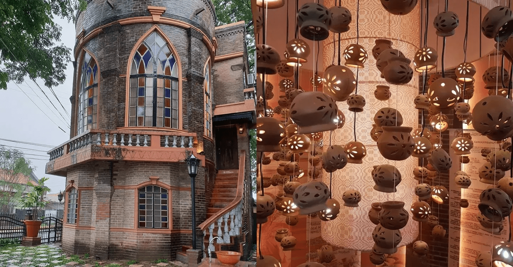

Museo San Nicoleño - Buabo Buabo
Museo San Nicoleño is another tourist destination in San Nicolas, Ilocos Norte, that houses the town’s rich culture with artifacts and historical pieces. This destination in Ilocos Norte creates a living and interactive experience for tourists aside from its carefully curated collections. It is located at Brgy. 3, San Ildefonso, San Nicolas, Ilocos Norte.